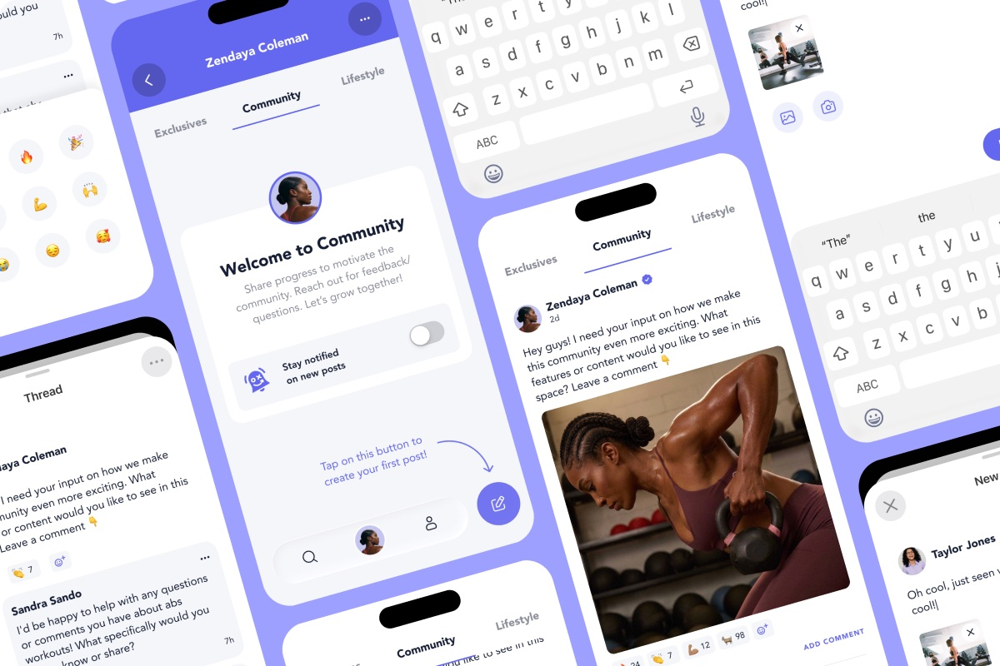
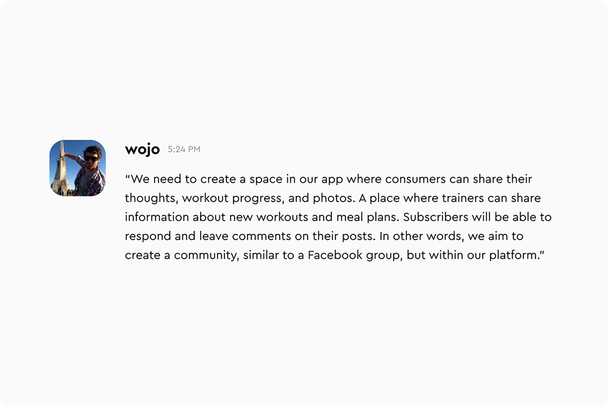
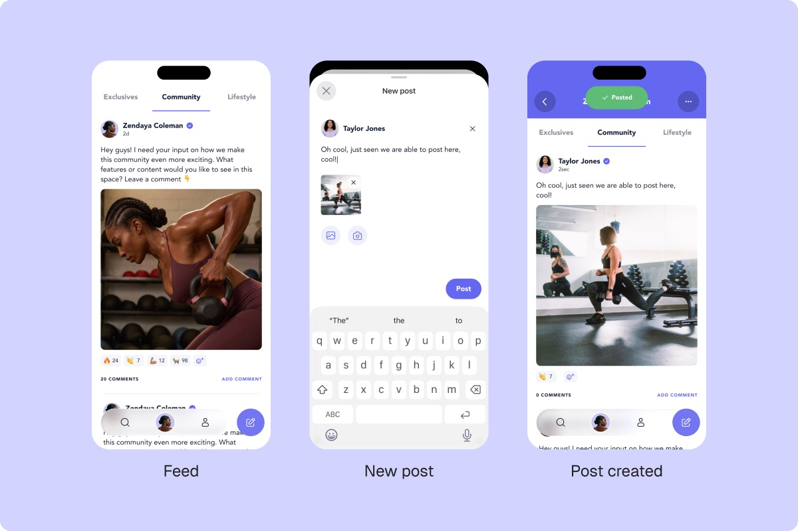
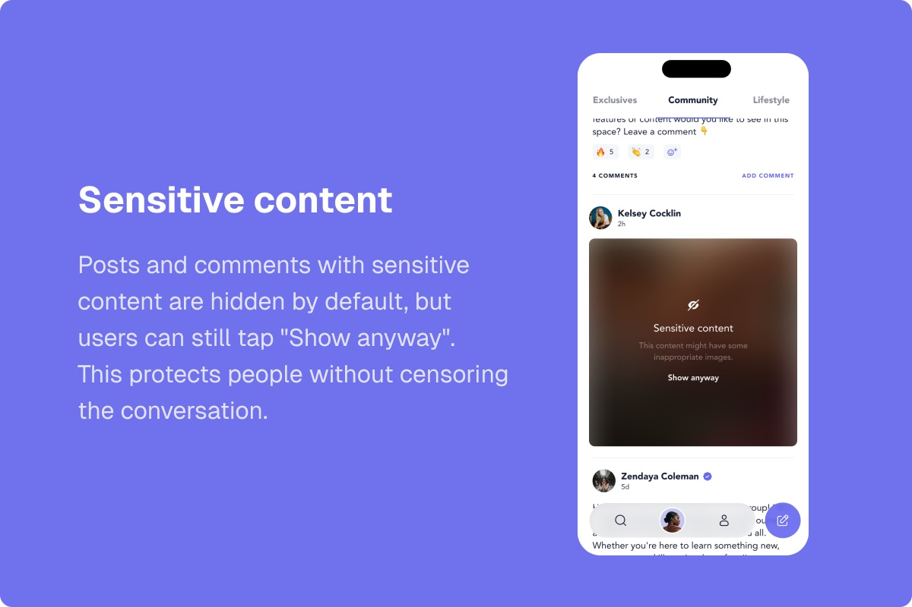
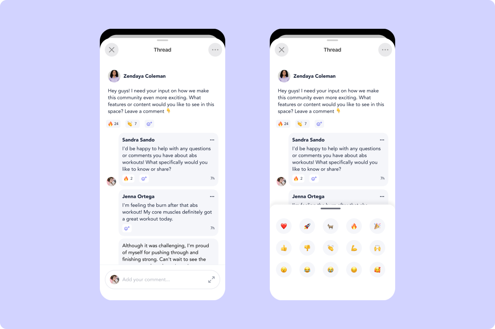
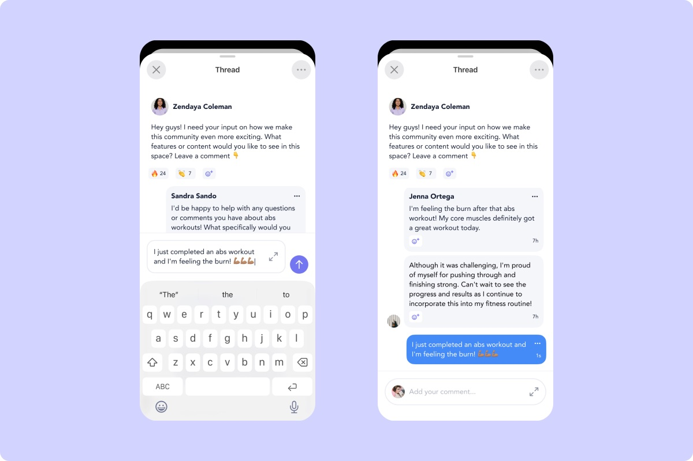
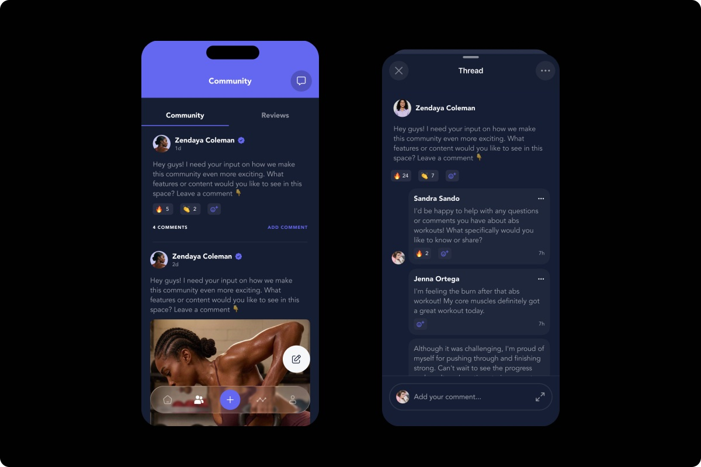
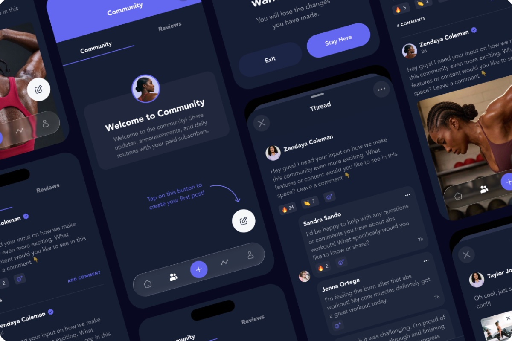
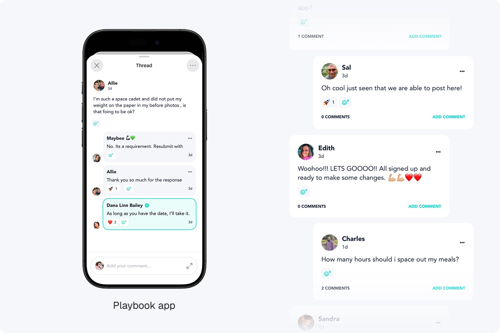

Playbook community feature
The problem
Playbook is a fitness app with programs from expert coaches. But it was a one-way experience: coaches published content, and users had no place to share progress, ask questions, or talk to each other.

Client brief

Intro screen
A short welcome explains what the Community is for and leads straight to one action: creating your first post. No long onboarding, users get it and start in one tap.

Post creation
Posting works the way users already know from social apps: write text, add a photo, publish to the feed.


Reactions
We kept only a few positive reactions. Fewer options make reacting a one-tap action, and removing negative emojis lowers the risk of bullying, so the community stays supportive.

Comments
Your own comments are highlighted, so you can find them in a long thread instantly.

Creator’s App
Coaches manage the community from a separate Creator app with a dark theme, so we adapted every Community screen to it.


Result
The Community is live. Users actively ask coaches about exercises and meal plans and talk to each other, so Playbook turned from a content library into a place for conversation. The Community also became a direct feedback channel for the product team.
